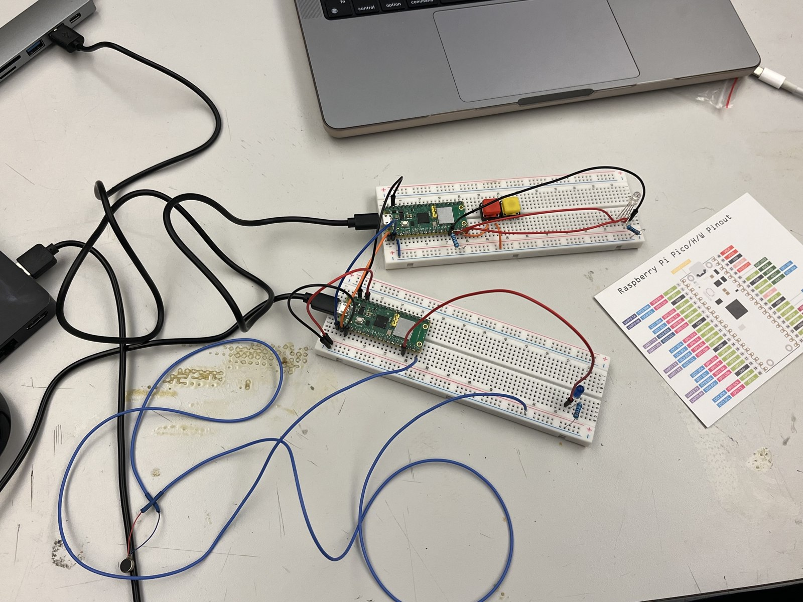

Hardware and software
The Pico W combines physical input/output with network communication. Python programming, sensor integration, vibration feedback, and LED control connect the digital logic to tangible behavior.
Project documentation / Connected hardware
Exploring a physical sense of presence through connected devices, sensing, vibration, and light.
Raspberry Pi Pico W / Python / PHP / HTTP / Sensors / Haptics

01 / Intention
The project asks how a small physical object can communicate presence across a distance. Instead of placing the entire interaction on a screen, the prototype explores temperature sensing and physical feedback through vibration and programmable LEDs.
My contribution
I programmed microcontrollers, designed and assembled circuitry, and used HTTP GET/POST requests with PHP endpoints to communicate between devices. I refined the prototype’s behavior through hands-on testing and explored how the electronics could become a wearable object.
The photographs below document the breadboard, testing, and enclosure stages of the prototype.
02 / System visualization
Select a stage to follow the high-level communication path. This walkthrough explains the system; it does not connect to live devices.
Temperature sensing provides physical input for the microcontroller. The prototype brings sensing together with tactile and visual feedback in a wearable exploration.
Conceptual flow: sensing → microcontroller → HTTP/PHP endpoints → remote device → vibration and LED feedback. This is an architecture overview, not a pin-level wiring schematic.
03 / Build process
Select a photograph to view it at a larger size.
04 / Engineering notes
The Pico W combines physical input/output with network communication. Python programming, sensor integration, vibration feedback, and LED control connect the digital logic to tangible behavior.
HTTP GET/POST and PHP endpoints provide the communication boundary between devices and server-side logic. This connects physical computing to the same request/response concepts used in web applications.
Vibration and light provide physical outputs. The wearable direction considers both the electronic system and how someone might experience it as an object.
This documentation describes a development prototype and its original process photographs. It does not establish a manufactured wearable or measured long-term reliability. The visualization explains the high-level flow rather than reproducing firmware execution.
05 / Next iteration